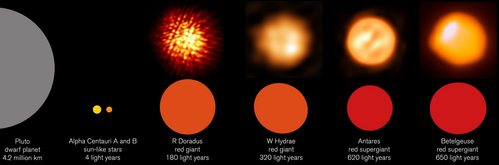
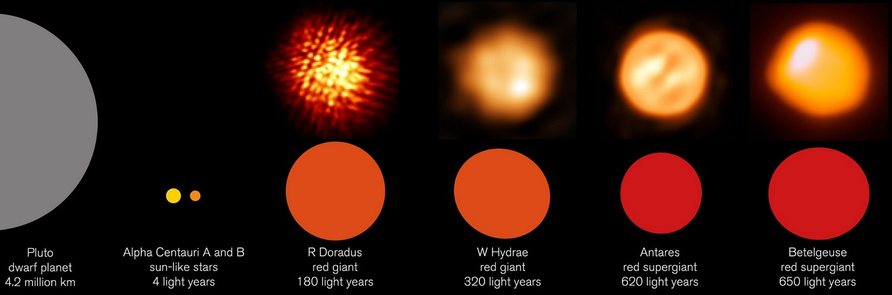

Этот список звезд содержит:
А также: Близкие звезды Гиганты и сверхгиганты  Быстро вращающиеся звезды
А также: Статистика звездных каталогов (файл создается автоматически)
Замечания:
Дополнительные источники:
Этот список звезд содержит:
А также:


Близкие звезды
Гиганты и сверхгиганты

Быстро вращающиеся звезды
А также: Статистика звездных каталогов (файл создается автоматически)
Замечания:
Дополнительные источники: